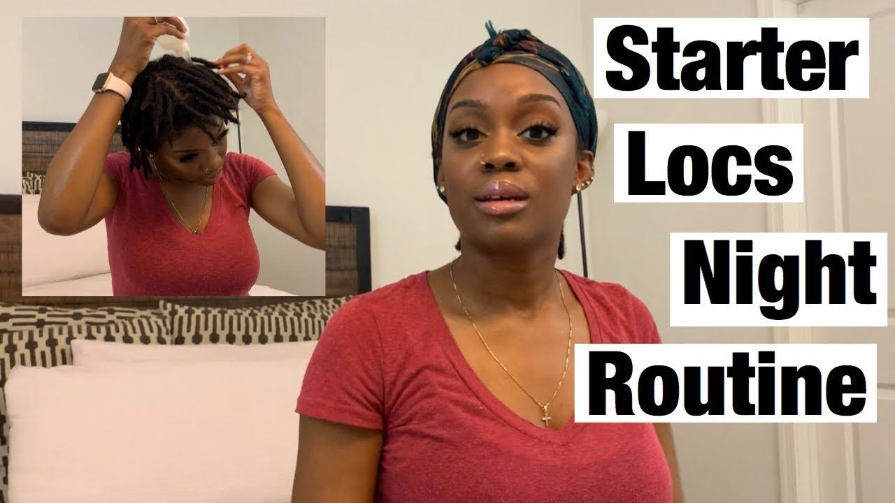

Double Durags for Long Locs: Containing Length Without Crushing It
Long locs ask two contradictory things of overnight coverage: room to exist without being crushed flat, and enough hold that they do not spill, rub, and frizz against the pillow. A single standard durag usually fails one of the two — too small to contain the length, or tied so hard to compensate that the locs wake up flattened and the edges pay for it. DaeLocs (@daelocs) shows a considered night routine in the video below. This guide builds the double-coverage system for long locs on those principles.
Arrange the locs before any fabric
Coverage never fixes arrangement. Before anything goes on your head, gather the locs the way you want them to rest — most long-loc wearers sweep them back and let them lie along the back, or coil them loosely on top. Shake them out, separate any that have tangled together during the day, and get the edges lying in their natural direction.
If your locs are damp from a misting or a wash, this arrangement step matters double: locs dry in the shape they are held in, and a loc folded against itself all night wakes up with a bend that takes days to relax.
Layer one contains, layer two secures
The first layer's job is containment: an oversized durag, a jumbo dreadlock cap, or a large satin wrap that takes the full volume of the locs without strain. It goes on gently — fabric drawn over the gathered locs, not dragged across them — with the band sitting behind the edges, never sawing across them.
The second layer's job is security: a standard durag tied moderately over the first, or a wide elastic band/cap, so the containment layer cannot slip off at 3 a.m. The second layer provides the hold; the first provides the room. That division of labour is the entire system — neither layer has to do both jobs badly.
Edges, moisture, and the morning
Edges are the fragile zone. Keep every band and tie off the hairline itself — pressure that waves tolerate will thin loc edges over months. If a band must cross near the front, pad it over the first layer so fabric, not elastic, touches the edge.
Mist lightly before covering if your locs run dry, and let the morning start gently: remove the layers in reverse order, shake the locs out with your hands, and give them a few minutes of air before styling. Long locs under a two-layer system wake up contained, moisturised, and — the whole point — still shaped like themselves.
Watch: a night routine for locs from DaeLocs — the coverage principles this system is built on
Video: “NIGHT TIME ROUTINE FOR STARTER LOCS | Two Strand Twist Starter Loc Journey” by DaeLocs (@daelocs) · Watch on YouTube
Shop the gear
Everything in this guide runs on the right gear: a durag that holds compression without slipping, a cap that stays put, and fabric that treats your hair right. The durag.store launch lineup is built to that standard — dual-layer construction, long tails, and stitching made to survive the routine. Join the launch list and use code GOLDSTANDARD for 15% off your first order.
Keep learning
- Dreadlock Caps: The Complete Guide to Sleeping and Living in Locs — Intermediate · Locs & Dreadlock Care
- Sleeping With Starter Locs: Protecting Baby Locs Through the Fragile Months — Basic · Locs & Dreadlock Care
- The Locs Night Routine: Moisture, Coverage and Morning Release — Basic · Locs & Dreadlock Care
Sources: Video — “NIGHT TIME ROUTINE FOR STARTER LOCS | Two Strand Twist Starter Loc Journey” by DaeLocs (@daelocs), youtube.com. Guide written by the durag.store Wave Lab.